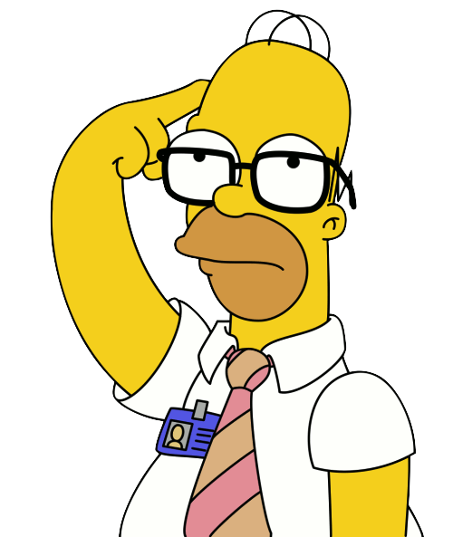
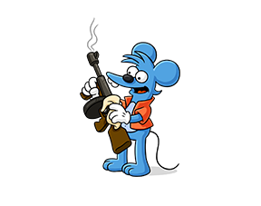
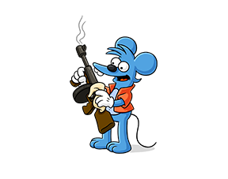

Sinopsis

Serie de TV de 596 episodios (1989-Actualidad) que emite la Cadena Fox desde 1989. Narra la historia de una peculiar familia (Homer, Marge, Bart, Maggie y Lisa Simpson) y otros divertidos personajes de la localidad norteamericana de Springfield. Homer, el padre, es un desastroso inspector de seguridad de una central nuclear. Marge, la madre, es un ama de casa acostumbrada a soportar a su peculiar familia. Bart, de 10 años, intenta divertirse con travesuras de todo tipo. Lisa es la más inteligente de la familia, y Maggie, la más pequeña, es un bebé que todavía no habla, pero que juega un importante papel.


 
